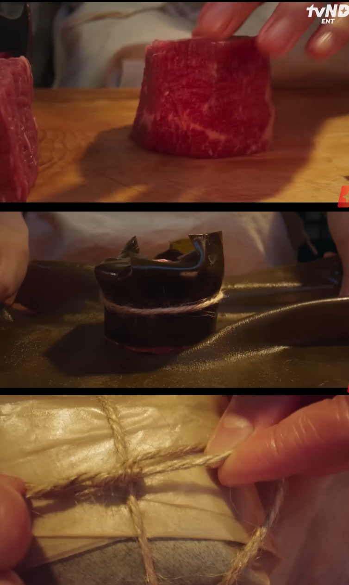
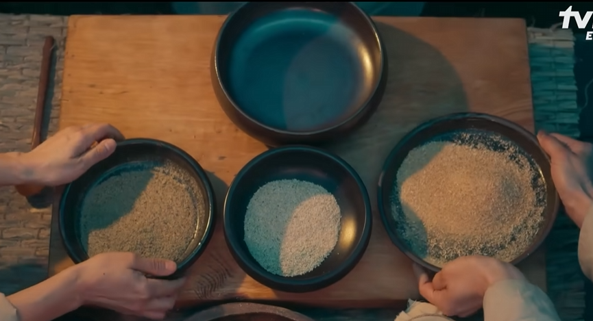
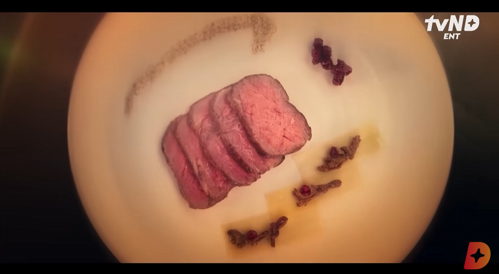

드라마 속 레시피
수비드 요리
마블링이 없고 근막과 힘줄이 많아서 질긴 고기를 부드럽게 만드는 저온조리 기법.
핵심 조리 설정
- 설정 온도: 55℃
- 조리 시간: 30분
수비드 조리 과정

- 한지에 기름칠을 해서 말립니다.
- 고기를 큐브 모양으로 자릅니다.
- 다시마를 길게 잘라 고기를 감쌉니다. (질긴 고기를 다시마로 숙성시키면 더욱 연해집니다.)
- 한지로 다시 감싸서 끈으로 고기를 고정합니다.
- 물을 팔팔 끓인 후, 찬물을 붓습니다.
- 미지근한 물에 고기를 넣고 30분 이상 가열합니다.
적정 온도 맞추기
.png)
육질이 가장 부드럽게 익는 온도인 49℃와 55℃ 사이로 물의 온도를 맞춰줍니다.
(미지근한 물로 오래 가열하면 소고기의 단백질 중 미오신이 반응하면서 고기가 부드러워집니다.)
끓는 물(100℃)과 상온의 물(대략 20℃)을 섞으면 수비드 요리가 가능해지는 55℃ 근처에서 평형을 이룹니다.
비법 소금 만들기

표고버섯, 멸치, 새우젓을 볶고 건조한 후 빻아 가루를 만들어 배합합니다.
현대의 합성 조미료 MSG와 같은 역할을 하며, 감칠맛을 수십 배까지 증폭시킵니다.
표고버섯: 구아닐산/멸치: 이노신산/새우젓: 글루탐산
완성

숙성된 고기의 깊은 맛과
특별한 소금의 감칠맛이 어우러진,
폭군마저 감탄할 '수비드 요리'가 완성되었습니다.
재첩 시금치 된장국
한국 가정식의 대표 메뉴로, 된장의 깊은 풍미와 재첩의 감칠맛이 조화를 이룹니다.
재료 (4인분 기준)
- 시금치 300G
- 재첩 200g (소금물에 해감 후 헹구기)
- 볶은 된장 3큰술
- 멸치 육수 1.5L
- 다진 마늘 1작은술, 청주 1큰술
주의사항
- 시금치는 너무 오래 끓이면 색이 죽으니 마지막에 넣는 게 좋습니다.
- 된장은 볶을 때 타지 않도록 약불에서 천천히 저어주세요.
조리과정
.png)
- 냄비에 참기름을 두르고 된장을 약한 불에서 2분간 볶아 군내를 제거합니다.
- 멸치 육수에 볶은 된장을 체에 걸러 풀고, 청주와 다진 마늘을 넣어 끓입니다.
- 육수가 끓으면 재첩을 넣고 5분간 중불에서 익힙니다.
- 적근채와 시금치를 넣고 3분간 더 끓입니다.
완성
.png)
볶은 된장으로 진한 맛을 내고, 적근채로 달콤함을 더하고, 재첩으로 깔끔한 뒷맛을 선사합니다.